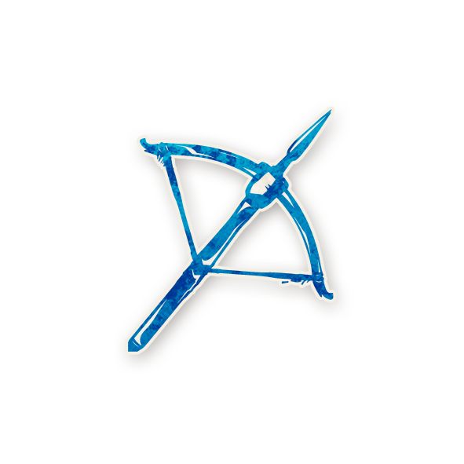
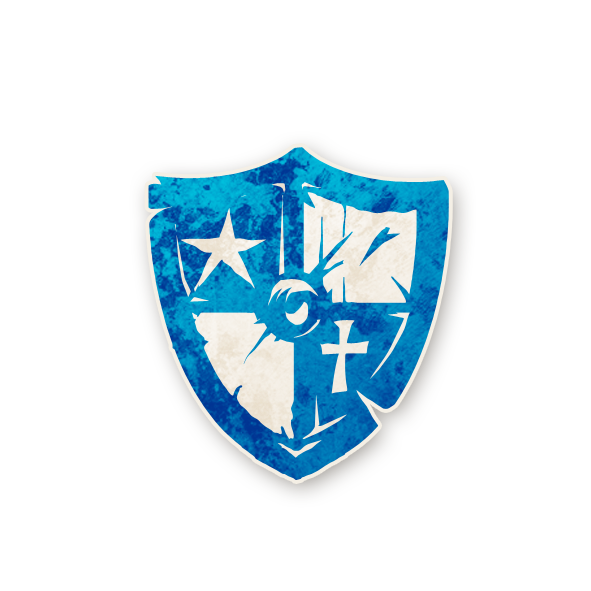
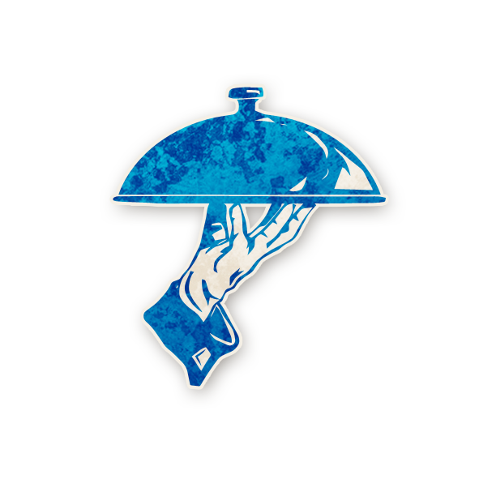
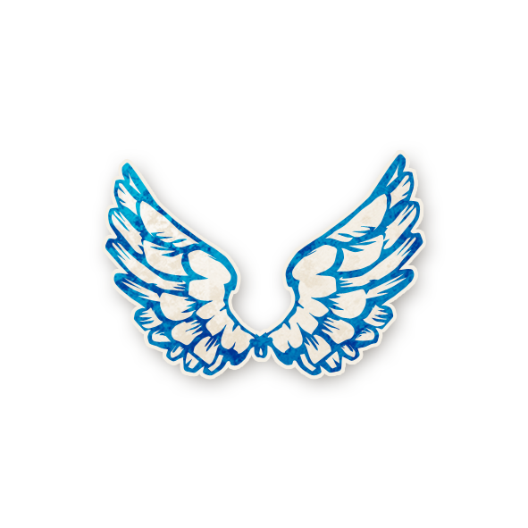
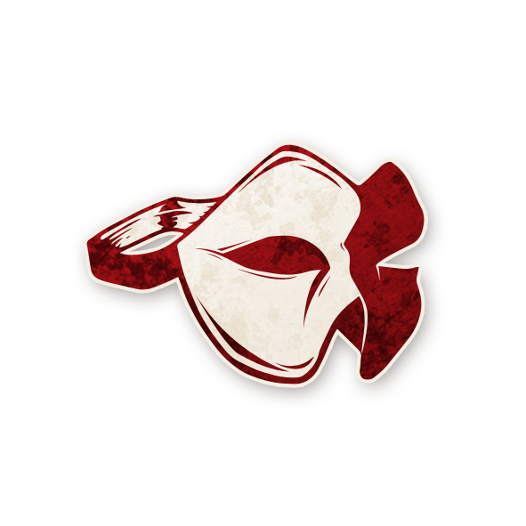
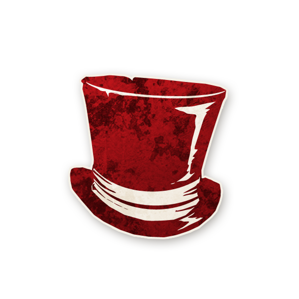

Townsfolk - Cittadini
Washerwoman
Inizi la giornata sapendo che un giocatore su 2 è un certo cittadino
Librarian
Inizi la giornata sapendo che un giocatore su 2 è un certo forestiero (o che nessun forestiero è in gioco)
Investigator
Inizi la giornata sapendo che un giocatore su 2 è un certo Scagnozzo
Chef
Inizi la giornata sapendo quante coppie di giocatori malvagi sono vicini
Empath
Ogni notte, scopri quanti dei tuoi 2 vicini vivi sono malvagi
Fortune Teller
Ogni notte, scegli 2 giocatori: scopri se uno di loro è il Demone. Un giocatore buono ti risulta come Demone
Undertaker
Ogni notte*, scopri quale personaggio è stato giustiziato oggi
Monk
Ogni notte*, scegli un giocatore (non te stesso): sarà al sicuro dal Demone stanotte
Ravenkeeper
Se muori di notte, vieni svegliato per scegliere un giocatore: scopri il suo personaggio
Virgin
La prima volta che vieni nominato, se chi ti nomina è un Cittadino, viene giustiziato immediatamente
Slayer
Una volta per partita, di giorno, scegli pubblicamente un giocatore: se è il Demone, muore
Soldier
Sei al sicuro dal Demone
Major
Se rimangono solo 3 giocatori vivi e non c'è nessuna esecuzione, la tua squadra vince. Se muori di notte, un altro giocatore potrebbe morire al tuo posto
*Non la prima notte
Outsiders - Forestieri
Butler
Ogni notte, scegli un giocatore (non te stesso): domani, puoi votare solo se vota anche lui
Drunk
Non sai di essere l'Ubriaco. Pensi di essere un personaggio Cittadino, ma non lo sei
Recluse
Potresti risultare malvagio e come Scagnozzo o Demone, anche da morto
Saint
Se muori per esecuzione, la tua squadra perde
Minions - Scagnozzi
Poisoner
Ogni notte, scegli un giocatore: sarà avvelenato stanotte e domani durante il giorno
Spy
Ogni notte, vedi il Grimorio. Potresti risultare come buono e come Cittadino o Forestiero, anche da morto
Scarlet Woman
Se ci sono 5 o più giocatori vivi (i Viaggiatori non contano) e il Demone muore, diventi il Demone
Baron
Ci sono Forestieri extra in gioco [+2 Forestieri]
Demons - Demoni
Imp
Ogni notte, scegli un giocatore: lo uccidi. Se ti uccidi in questo modo, uno scagnozzo diventa il nuovo Imp
Le nubi si addensano su Ravenswood Bluff, avvolgendo questa sonnolenta cittadina e i suoi abitanti superstiziosi in un'inquietante ombra. Panni appena lavati danzano in modo sinistro sui fili tesi tra le case. I camini tossiscono pennacchi di fumo nell'aria. Profumi esotici filtrano attraverso le crepe delle finestre e sotto le porte, mentre calderoni nascosti ribollono. Una brezza autunnale insolitamente calda avvolge i muri ricoperti d'edera e sussurra minacciosamente a coloro che sono abbastanza coraggiosi da camminare per le strade acciottolate.
Madri ansiose richiamano i loro figli dal gioco mentre i tuoni cominciano a risuonare all'orizzonte. Se si ascolta più attentamente, però, si possono sentire echi di rumori ancora più strani provenire dalla foresta vicina. Sotto l'occhio vigile di un monastero che incombe, figure in controluce saltano da un portone all'altro.
Coloro che sanno leggere i segni sanno che ci sono... (guai in vista)
Giocatori
| Giocatori | 5 | 6 | 7 | 8 | 9 | 10 | 11 | 12 | 13 | 14 | 15+ |
|---|---|---|---|---|---|---|---|---|---|---|---|
| Cittadini | 3 | 3 | 5 | 5 | 5 | 7 | 7 | 7 | 9 | 9 | 9 |
| Forestieri | 0 | 1 | 0 | 1 | 2 | 0 | 1 | 2 | 0 | 1 | 2 |
| Scagnozzi | 1 | 1 | 1 | 1 | 1 | 2 | 2 | 2 | 3 | 3 | 3 |
| Demone | 1 | 1 | 1 | 1 | 1 | 1 | 1 | 1 | 1 | 1 | 1 |
Prima notte
I giocatori hanno gli occhi chiusi. Aspetta circa 10 secondi. Ogni Viaggiatore con abilità della prima notte agisce.👁️ 😴
Informazioni degli scagnozzi
Se ci sono 7 o più giocatori:
• Se c'è più di uno Scagnozzo, si guardano tutti tra di loro.👁️
• Mostra la carta "Questo è il Demone". Indica il Demone.😴
Informazioni del Demone
Se ci sono 7 o più giocatori:
• Mostra la carta "Questi sono i tuoi scagnozzi". Indica ogni Scagnozzo.👁️
• Mostra la carta "Questi personaggi non sono in gioco". Mostra 3 segnalini di personaggi buoni non in gioco.😴
Poisoner
• Il Poisoner indica un giocatore. Quel giocatore è avvelenato.👁️ 😴 🪙
Spy
• Mostra il Grimorio alla Spia per tutto il tempo necessario.👁️ 😴
Washerwoman
🪙🪙
• Mostra il segnalino di un Cittadino in gioco. Indica due giocatori, uno dei quali è quel personaggio.👁️ 😴
Librarian
🪙🪙
Se ci sono Forestieri in gioco:
• Mostra il segnalino di un Forestiero in gioco. Indica due giocatori, uno dei quali è quel personaggio.👁️ 😴
Altrimenti:
• Mostra il segnale della mano per il numero "zero".👁️ 😴
Investigator
🪙🪙
• Mostra il segnalino di uno Scagnozzo in gioco. Indica due giocatori, uno dei quali è quel personaggio.👁️ 😴
Chef
• Mostra il segnale della mano (0, 1, 2, ecc.) per il numero di coppie di giocatori malvagi vicini tra loro.👁️ 😴
Empath
• Mostra il segnale della mano (0, 1, 2) per il numero di vicini malvagi vivi dell'Empath.👁️ 😴
Fortune Teller
• Il Fortune Teller indica due giocatori.👁️
• Mostra il segnale della testa (annuisci "sì", scuoti "no") per indicare se uno di quei giocatori è un Demone o è segnato come "Esca"; "sì" in entrambi i casi, "no" altrimenti.😴
Butler
• Il Butler indica un giocatore. Segna quel giocatore come "Padrone".👁️ 😴 🪙
Alba
• Aspetta circa 10 secondi.
• Chiedi di aprire gli occhi; annuncia immediatamente quali giocatori (se ce ne sono) sono morti.
Altre notti
Tramonto
• Aspetta circa 10 secondi.
• Ogni Viaggiatore con abilità notturne agisce.👁️ 😴
Poisoner
• Il giocatore "Avvelenato" non è più avvelenato. ✖️🪙
• Il Poisoner indica un giocatore. Quel giocatore è avvelenato.👁️ 😴 🪙
Monk
• Il giocatore "Protetto" non è più protetto. ✖️🪙
• Il Monaco indica un giocatore che non sia se stesso. Segna quel giocatore come "Protetto".👁️ 😴 🪙
Spy
• Mostra il Grimorio alla Spia per tutto il tempo necessario.👁️ 😴
Scarlet Woman
Quando la Scarlet Woman diventa il Demone:
• Mostra la carta "Tu sei", poi il segnalino del personaggio Demone.👁️ 😴
Imp
• L'Imp indica un giocatore. Quel giocatore muore.👁️ 😴 🪙
Se l'Imp ha scelto se stesso:
• Sostituisci il personaggio di uno Scagnozzo con un segnalino Imp di riserva. 🪙
• Sveglia il nuovo Imp. Mostra la carta "Tu sei", poi il segnalino Imp.👁️ 😴
Ravenkeeper
Se il Ravenkeeper è morto stanotte:
• Il Ravenkeeper indica un giocatore. Mostra il segnalino del personaggio di quel giocatore.👁️ 😴
Undertaker
Se un giocatore è stato giustiziato oggi:
• Mostra il segnalino del personaggio di quel giocatore.👁️ 😴
Empath
• Mostra il segnale della mano (0, 1, 2) per il numero di vicini malvagi vivi dell'Empath.👁️ 😴
Fortune Teller
• Il Fortune Teller indica due giocatori.👁️
• Mostra il segnale della testa (annuisci "sì", scuoti "no") per indicare se uno di quei giocatori è un Demone o è segnato come "Esca"; "sì" in entrambi i casi, "no" altrimenti.😴
Butler
• Il giocatore "Padrone" non è più il Padrone. ✖️🪙
• Il Butler indica un giocatore. Segna quel giocatore come "Padrone".👁️ 😴 🪙
Dawn
• Aspetta circa 10 secondi.
• Chiedi di aprire gli occhi; annuncia immediatamente quali giocatori (se ce ne sono) sono morti.